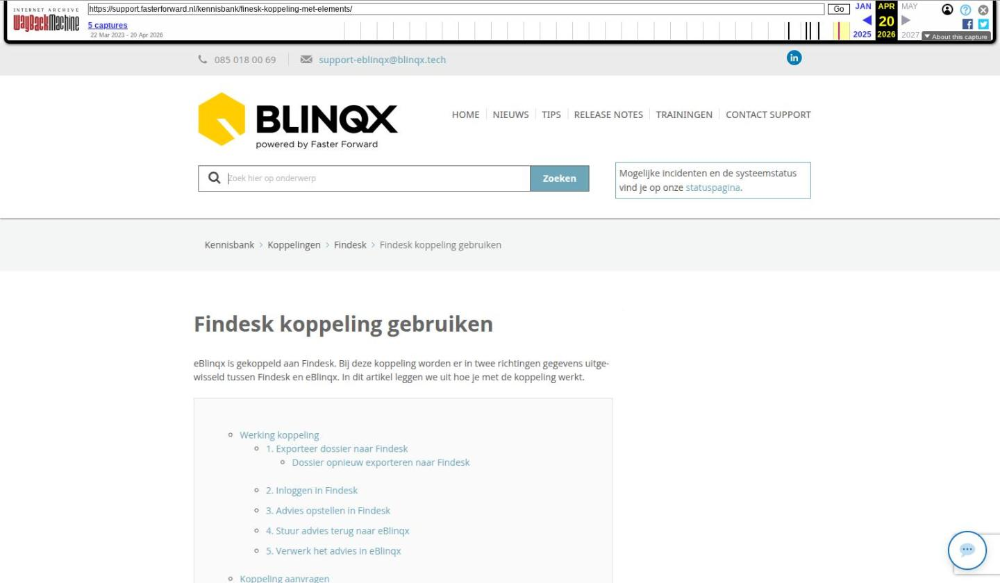

Findesk koppeling gebruiken

Tekstinhoud
Findesk koppeling gebruiken | Support
---
Findesk koppeling gebruiken
eBlinqx is gekoppeld aan Findesk. Bij deze koppeling worden er in twee richtingen gegevens uitgewisseld tussen Findesk en eBlinqx. In dit artikel leggen we uit hoe je met de koppeling werkt.
Werking koppeling
1. Exporteer dossier naar Findesk
Dossier opnieuw exporteren naar Findesk
2. Inloggen in Findesk
3. Advies opstellen in Findesk
4. Stuur advies terug naar eBlinqx
5. Verwerk het advies in eBlinqx
Koppeling aanvragen
Werking koppeling
1. Exporteer dossier naar Findesk
Vanuit eBlinqx stuur je het dossier direct naar Findesk. Het dossiernummer uit eBlinqx wordt meegestuurd, zodat bij de export vanuit Findesk naar eBlinqx de gegevens weer direct gekoppeld worden aan het juiste dossier.
Via het tabblad 'Export' en vervolgens 'Findesk' selecteer je welke personen en welke gegevens je naar Findesk wilt sturen. Klik op 'Exporteren' om de gegevens te versturen.
Indien je gebruik maakt van Ockto en voor de klant is een ODM berichten binnengekomen dan kies je eerst of eBlinqx of Ockto als bron wilt gebruiken. Als je Ockto als bron gebruikt dan krijg je andere velden te zien die je moet invullen.
Dossier opnieuw exporteren naar Findesk
Het is niet mogelijk om een dossier opnieuw te exporteren naar Findesk als daar de relatie nog bestaat. Je zult eerst in Findesk de relatie moeten verwijderen. Let op: het definitief verwijderen in Findesk is een nachtelijk proces. Je zult na verwijderen het dossier pas de volgende dag opnieuw kunnen exporteren, anders verschijnt de melding 'Findesk: Bronreferentie {naamklanteneennummer} bestaat al.'
2. Inloggen in Findesk
Na de export uit eBlinqx kom je bij het Findesk inlogscherm. Log hier in met je inloggegevens
3. Advies opstellen in Findesk
In Findesk vergelijk je de verschillende hypotheken en kies je het gewenste product.
Findesk toont ook een samenvatting van de aanvraag voordat je deze verstuurt.
Via de knop 'Valideren en opslaan' wordt de aanvraag klaargezet, maar nog niet verzonden.
Via de knop 'Volgende' ga je naar de samenvatting van de aanvraag, zie punt 4.
4. Stuur advies terug naar eBlinqx
Om het advies terug te sturen naar eBlinqx moet er wel in Findesk een koppeling gelegd worden met eBlinqx. Hier kan je lezen hoe je dit kunt doen. Via de knop 'Exporteren naar Faster Forward Elements' stuur je het advies via HDN naar eBlinqx.
5. Verwerk het advies in eBlinqx
In eBlinqx komt het opgestelde advies uit Findesk binnen in de HDN inbox. Verwerk vanaf hier AX bericht (aanvraagbericht).
Het AX bericht moet eventueel nog aangevuld worden binnen eBlinqx. Daarna kun je hem pas verwerken. Dit zorgt ervoor dat er een hypotheek in het klantdossier in eBlinqx komt te staan. Vanuit die hypotheek verzend je vervolgens de HDN-aanvraag via de workflow.
Verwerken: In dit artikel lees je hoe je berichten in de HDN inbox verwerkt.
Koppeling aanvragen
Indien je de koppeling met Findesk wenst, stuur je een e-mail naar support-eblinqx@blinqx.tech
Klik hier voor meer informatie over de adviespakketten die gekoppeld zijn met eBlinqx.
Laatste update: 15 oktober 2025
Tagged: koppeling
Was deze informatie nuttig?
Ja Nee